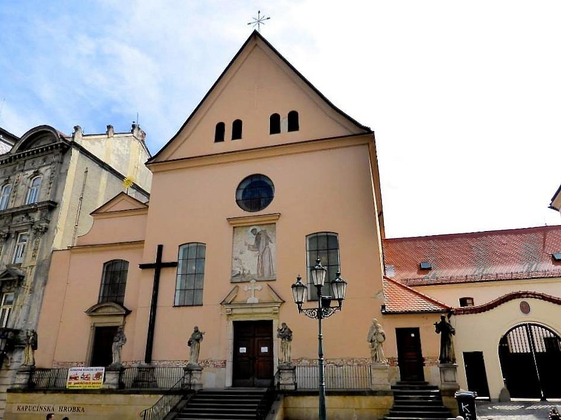
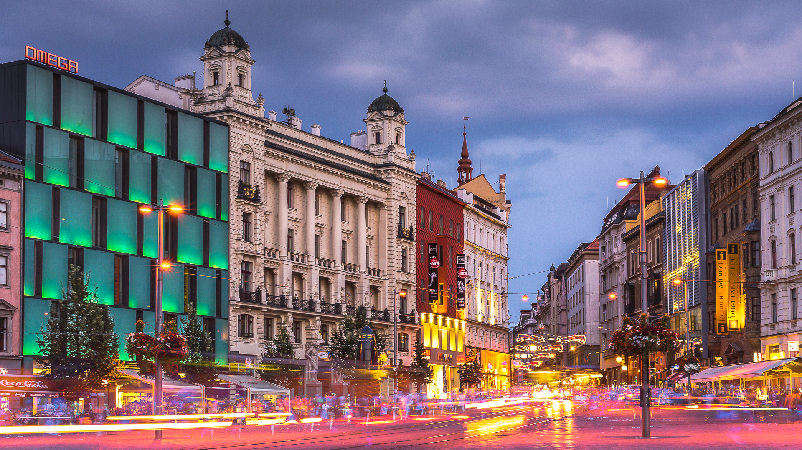
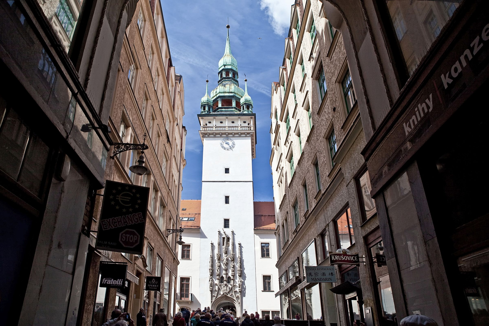
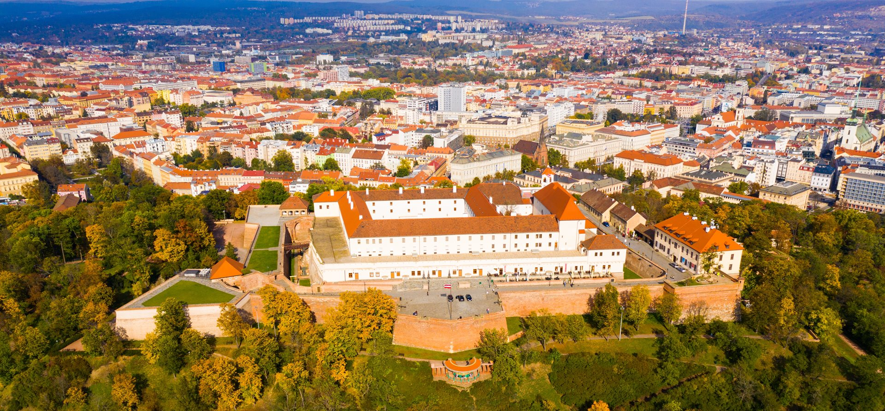
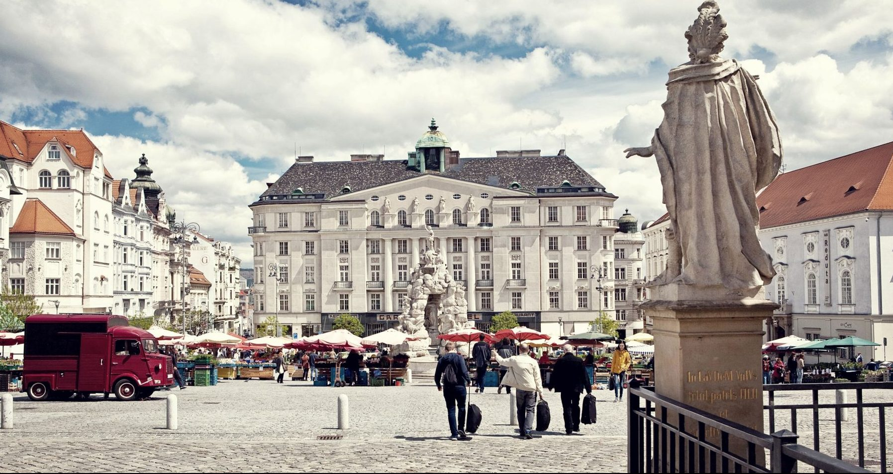
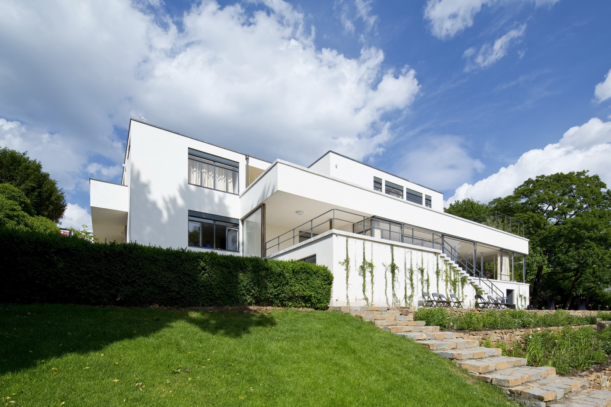

-

Capuchin Monastery
The Capuchin Monastery in Brno is a historic site renowned for its tranquil ambiance, elegant architecture, and fascinating museum, providing insight into centuries of spiritual tradition and cultural heritage.
Nestled in Brno's bustling city center, the Capuchin Monastery is a haven of tranquility and spirituality. Established in the 17th century, this historic site boasts elegant architecture characterized by simplicity and grace. Visitors are invited to explore the monastery's peaceful courtyards and lush gardens, providing a serene retreat from the urban hustle.
At the heart of the monastery lies its captivating museum, housing a rich collection of religious artifacts and historical treasures. From ancient relics to exquisite artwork, the museum offers insight into the monastery's centuries-old legacy and its profound impact on local culture and spirituality.
Whether admiring the monastery's architectural beauty, exploring its museum, or simply enjoying a quiet moment of reflection in its scenic surroundings, the Capuchin Monastery promises an enriching experience for visitors seeking a glimpse into Brno's cultural and spiritual heritage.
-

Freedom Square
Freedom Square is a bustling public space in Brno, known for its vibrant atmosphere and historical significance.
Freedom Square, also known as Namesti Svobody, is one of Brno's most iconic landmarks. Surrounded by historic buildings and bustling cafes, it serves as the city's main square and cultural hub. Visitors can admire the stunning architecture, explore nearby attractions, or simply soak in the lively ambiance of this vibrant public space. From cultural events to political demonstrations, Freedom Square has been witness to numerous significant moments throughout Brno's history. It's a must-visit destination for anyone looking to experience the pulse of the city and immerse themselves in its rich cultural tapestry.
-

Old Town Hall
The Old Town Hall in Brno is a historic landmark showcasing architectural charm and historical significance.
The Old Town Hall stands as a testament to Brno's rich history and architectural heritage. Dating back centuries, this iconic building features a blend of Gothic and Renaissance styles, reflecting the city's diverse cultural influences. Visitors can admire the intricate facades, climb the tower for panoramic views of the city, and explore the building's interior, which houses a museum showcasing artifacts and exhibits detailing Brno's past. From hosting civic events to serving as a symbol of civic pride, the Old Town Hall continues to play a vital role in Brno's cultural landscape, making it a must-see destination for history enthusiasts and architecture lovers alike.
-

Spilberk Castle
Spilberk Castle is a historic fortress perched atop a hill in Brno, offering panoramic views of the city and a glimpse into its storied past.
Spilberk Castle, majestically overlooking the city of Brno, is a symbol of strength and resilience. Built in the 13th century, the castle has witnessed centuries of history, serving as a fortress, royal residence, and even a prison. Its commanding position atop Petrov Hill affords visitors breathtaking views of Brno and the surrounding landscape.
Stepping inside the castle walls, visitors are transported back in time, exploring its ramparts, courtyards, and historic chambers. Exhibits within the castle provide insight into its role in shaping the region's history, from medieval fortification to modern cultural center.
Despite its tumultuous past, Spilberk Castle now stands as a beacon of cultural heritage, hosting events, concerts, and exhibitions that celebrate its rich legacy. Whether wandering through its medieval halls or simply enjoying the panoramic vistas from its towers, a visit to Spilberk Castle offers a captivating journey through Brno's fascinating past.
-

Vegetable Market
The Vegetable Market in Brno is a vibrant hub of local culture and commerce, offering fresh produce, artisanal goods, and a lively atmosphere.
The Vegetable Market in Brno is a vibrant hub, pulsating with energy and color, embodying the city's dynamic spirit. Local farmers proudly display their seasonal bounty, while artisans offer handcrafted wares, from intricately woven textiles to delicate ceramics.
Beneath the market's bustling exterior lies a hidden treasure: ancient underground tunnels dating back centuries. Guided tours lead curious explorers through these labyrinthine corridors, offering a glimpse into Brno's rich history.
Beyond its role as a marketplace, the Vegetable Market is a cultural melting pot where locals and tourists converge to savor culinary delights and soak in the vibrant atmosphere.
-

Vila Tugendhat
Vila Tugendhat in Brno is a symbol of modern architecture and innovation, built in the 1930s in the functionalist style, embodying elegance and cutting-edge technology.
Vila Tugendhat is an epitome of modern design and advanced technology. Constructed in the 1930s by architect Ludwig Mies van der Rohe for the Tugendhat family, it became a symbol of innovation and luxury. Its open floor plan, use of glass, and automatic devices for control made it unique for its time.
Today, Vila Tugendhat is recognized as a UNESCO World Heritage Site and attracts thousands of tourists and architectural enthusiasts. Its spacious halls, minimalist design, and cutting-edge technology leave lasting impressions, while tours of the villa delve into the history and design solutions of this remarkable architectural masterpiece.